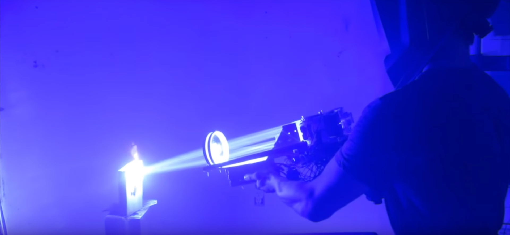

Я у мамы инженер
Подборка лучших изобретений!

Летающий байк, лазерная базука и реактивные крылья — нет, это не набор будущего супергероя, а самые настоящие «изобретения из гаража». Из подручных средств конструкторы-любители могут сотворить и не такое! Hi-Tech Mail.Ru собрал работы нескольких энтузиастов, о которых должен знать каждый.
Световая базука в гараже
Студент Дрэйк Энтони обожает лазеры, и собрал у себя в гараже мощную световую «базуку». В ее основе были неисправные DLP-проекторы, которые парень купил на онлайн-аукционе. В результате получилось четыре 50-ваттных лазера. Для сравнения: обычная лазерная указка обладает мощностью 0,0005 Вт.
Базука, конечно, крутая: и шарики воздушные лопает, и лист металла прожигает. Военным до такого пока далеко.
